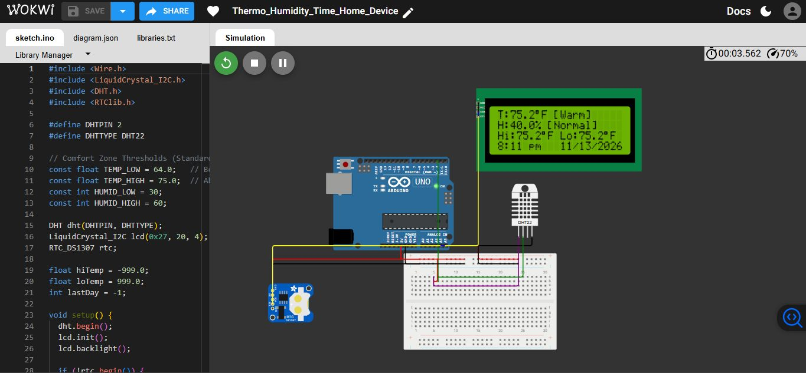

Digital Room Thermometer & Hygrometer
A room monitor built around an Arduino Uno. Before building it physically, I wired and tested the whole circuit and program in the Wokwi simulator to verify connection locations and that everything worked.
- Hardware
- Arduino Uno, DHT22 sensor, real-time clock (DS1307 in simulation, DS3231 for the real build), 20×4 I²C LCD, half-size breadboard
- Tools
- Wokwi simulator; Arduino C++ with the DHT, RTClib and LiquidCrystal_I2C libraries
- Status
- Circuit and code verified in simulation

What it does
- Row 1: temperature in °F with a status of Cold (below 64°F), Good, or Warm (above 75°F).
- Row 2: relative humidity with a status of Dry (below 30%), Normal, or Humid (above 60%).
- Row 3: the day’s high and low temperature, reset automatically when the date changes.
- Row 4: time in 12-hour format and the date, from the real-time clock.
How it’s built
- The DHT22’s data line is on digital pin 2, and the sensor is read for humidity and temperature (in °F).
- The real-time clock and LCD share the Arduino’s I²C bus (A4 = SDA, A5 = SCL); a half-size breadboard distributes 5 V and ground.
- If the clock isn’t running, it is set to the compile time. Readings that fail (NaN) show an error instead of bad data.
The simulator only offers a DS1307 clock, so the physical build will use a DS3231 with a small code change.
Open the live simulation on Wokwi
View the Arduino code
#include <Wire.h>
#include <LiquidCrystal_I2C.h>
#include <DHT.h>
#include <RTClib.h>
#define DHTPIN 2
#define DHTTYPE DHT22
// Comfort Zone Thresholds (Standard Indoor Room Levels in Fahrenheit)
const float TEMP_LOW = 64.0; // Below 64°F is too cold
const float TEMP_HIGH = 75.0; // Above 75°F is too warm
const int HUMID_LOW = 30;
const int HUMID_HIGH = 60;
DHT dht(DHTPIN, DHTTYPE);
LiquidCrystal_I2C lcd(0x27, 20, 4);
RTC_DS1307 rtc;
float hiTemp = -999.0;
float loTemp = 999.0;
int lastDay = -1;
void setup() {
dht.begin();
lcd.init();
lcd.backlight();
if (!rtc.begin()) {
lcd.print("RTC Error!");
while (1);
}
if (!rtc.isrunning()) {
rtc.adjust(DateTime(F(__DATE__), F(__TIME__)));
}
lcd.clear();
}
void loop() {
DateTime now = rtc.now();
float humidity = dht.readHumidity();
// Passing 'true' reads the temperature directly in Fahrenheit
float temperature = dht.readTemperature(true);
if (now.day() != lastDay) {
hiTemp = -999.0;
loTemp = 999.0;
lastDay = now.day();
}
if (!isnan(temperature) && !isnan(humidity)) {
if (temperature > hiTemp || hiTemp == -999.0) hiTemp = temperature;
if (temperature < loTemp || loTemp == 999.0) loTemp = temperature;
}
// --- ROW 1: Temp & Status ---
lcd.setCursor(0, 0);
if (isnan(temperature)) {
lcd.print("T: Error ");
} else {
lcd.print("T:");
lcd.print(temperature, 1);
lcd.write(223); // Degree symbol
lcd.print("F ");
if (temperature < TEMP_LOW) {
lcd.print("[Cold] ");
} else if (temperature > TEMP_HIGH) {
lcd.print("[Warm] ");
} else {
lcd.print("[Good] ");
}
}
// --- ROW 2: Humidity & Status ---
lcd.setCursor(0, 1);
if (isnan(humidity)) {
lcd.print("H: Error ");
} else {
lcd.print("H:");
lcd.print(humidity, 1);
lcd.print("% ");
if (humidity < HUMID_LOW) {
lcd.print("[Dry] ");
} else if (humidity > HUMID_HIGH) {
lcd.print("[Humid] ");
} else {
lcd.print("[Normal] ");
}
}
// --- ROW 3: Daily Records (Hi / Lo in Fahrenheit) ---
lcd.setCursor(0, 2);
if (hiTemp == -999.0 || loTemp == 999.0) {
lcd.print("Rec: Calculating... ");
} else {
lcd.print("Hi:");
lcd.print(hiTemp, 1);
lcd.write(223);
lcd.print("F Lo:");
lcd.print(loTemp, 1);
lcd.write(223);
lcd.print("F ");
}
// --- ROW 4: Live Time & Date (Perfect 20-character fit) ---
lcd.setCursor(0, 3);
int hour12 = now.hour();
bool isPM = (hour12 >= 12);
if (hour12 == 0) {
hour12 = 12;
} else if (hour12 > 12) {
hour12 = hour12 - 12;
}
// Print Time
lcd.print(hour12);
lcd.print(':');
if (now.minute() < 10) lcd.print('0');
lcd.print(now.minute());
if (isPM) {
lcd.print(" pm");
} else {
lcd.print(" am");
}
// Spacing calculation to hit exactly 20 characters
if (hour12 < 10) {
lcd.print(" ");
} else {
lcd.print(" ");
}
// Print Date (MM/DD/YYYY)
if (now.month() < 10) lcd.print('0');
lcd.print(now.month());
lcd.print('/');
if (now.day() < 10) lcd.print('0');
lcd.print(now.day());
lcd.print('/');
lcd.print(now.year());
delay(1000);
}